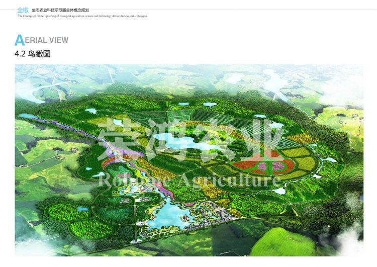

农业旅游（AgricultureToirism）是20世纪首先在发达国家兴起的一种旅游方式，是生态农业与生态旅游结合催生的产物。“农业旅游”一词首先出现在世界旅游发达的欧美国家。在国外，早在19世纪30年代欧洲已开始了农业旅游。意大利在1865年便成立了“农业与旅游全国协会”，是世界上成立最早的农业与旅游相结合的专业协会。该协的主要功能是专门介绍城市居民到农村体验农业野趣，与农民同吃、同劳作，或者在农民家中住宿。这实际上标志着农业与旅游业已经结合成为一个新形势的产业。生态农业旅游给了人们接近大自然的机会，让人们可以亲密的和农业接触，在这个发展迅速的社会。城市已经成为主角，但是生态农业旅游的兴起给人们一种回归田园生活的感觉。
